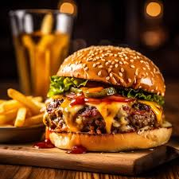

This is a burger
Ingredients
- Bun (2 halves)
- Beef patty (1, cooked)
- Cheddar cheese (1 slice)
- Lettuce leaves (2)
- Tomato slices (2)
- Onion rings (optional, 3 slices)
- Pickles (optional, 2 slices)
- Mayonnaise (1 tbsp)
- Ketchup (1 tbsp)
- Mustard (optional, 1 tsp)
Instructions
- Prepare the ingredients:
- Cook the beef patty on a skillet or grill until done to your liking.
- Slice the tomato, onion, and pickles (if using).
- Toast the burger buns lightly for added texture.
- Assemble the burger:
- Spread mayonnaise on the bottom half of the bun.
- Place a lettuce leaf on top of the mayonnaise.
- Add the cooked beef patty and a slice of cheddar cheese.
- Top with tomato slices, onion rings, and pickles.
- Spread ketchup and mustard (if desired) on the top half of the bun.
- Serve:
- Place the top half of the bun onto the assembled ingredients.
- Serve the burger immediately, accompanied by fries or your preferred side dish.